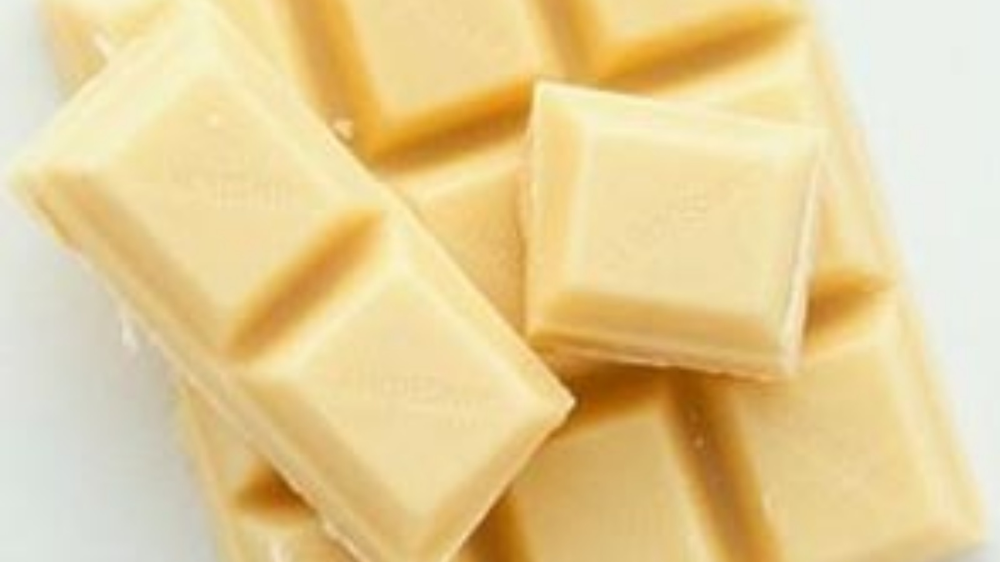

|  |
|
|
| ◄ | ► |
| Ao contrário do chocolate escuro, a versão branca não leva massa de cacau na sua composição, mas apenas a gordura extraída de suas sementes. Por esse motivo, não apresenta as mesmas características nutricionais e antioxidantes, assim como o sabor característico. |